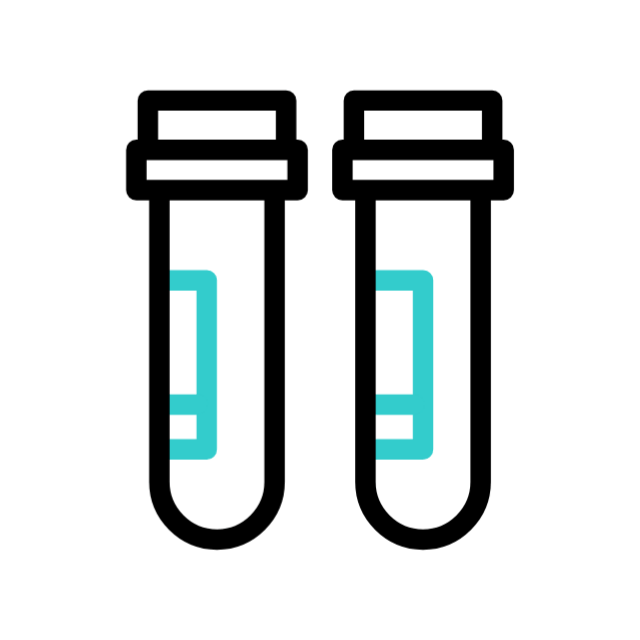

Nuestros Servicios

Laboratorio clínico
Ofrecemos una amplia gama de servicios de análisis y pruebas médicas.

Estética canina
Estética para tu amigo peludo: baños, cortes estilizados de cabello, corte de garras y más.
*En caso de requerir un servicio por emergencia (sin previa cita) podemos brindarte el servicio de acuerdo a la gravedad o situación del animalito afectado.